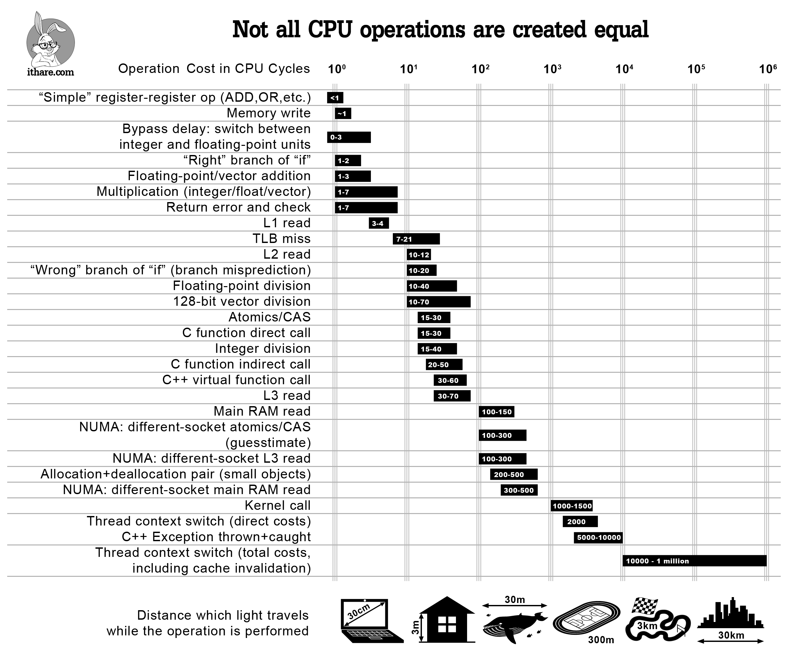

Understanding performance with Google Benchmark
Federico Ficarelli @ Meetup C++ 2018-12-13
Disclaimer #1

Disclaimer #1
- Get your design right
- Use efficient algorithms, fast data structures and idioms
- Measure and understand performance
- Possibly consider fine grained optimization only when needed
Disclaimer #2
- Concepts are portable, their application is not
- Some degree of knowledge of your architecture is required
- Profiling at low level can be frustrating, prepare yourself to some interpretation of data
Does performance matter anymore?
Measure or it doesn’t count
Measure and understand
- Profile your application as a whole
- Identify hotspots
- Understand what’s going on in your hottest code
Macro benchmarks
Macro benchmarks
- Whole application
- Similar as much as possible to a production scenario
Micro benchmarks
Micro benchmarks

Micro benchmarks
- The smallest possible hotspot
- As much isolation as you can get
- The goal is to analyze, understand and reproduce
Google Benchmark
Google Benchmark: getting started
- Define a free function accepting a
benchmark::State& - Measured code loops over
benchmark::State& - Register it with
BENCHMARK(...)macro - Add runner with
BENCHMARK_MAIN()macro
Google Benchmark: how it works
- Warms up the caches
- Runs the benchmark
- Stops when the measurement is statistically stable
Computer latencies

Parametric benchmarks: values
Single argument: Arg(n)
static void bench(benchmark::State& state) {
for(auto _: state) {
std::vector<std::int32_t> v(state.range(0));
}
}
BENCHMARK(bench)
->Arg(1)
->Arg(2)
// ...
->Arg(10);
Single argument: Range(n, m)
static void bench(benchmark::State& state) {
for(auto _: state) {
std::vector<std::int32_t> v(state.range(0));
}
}
BENCHMARK(bench)->Range(2, 10);
Single argument: RangeMultiplier(n)
static void bench(benchmark::State& state) {
for(auto _: state) {
std::vector<std::int32_t> v(state.range(0));
}
}
BENCHMARK(bench)->RangeMultiplier(3)->Range(2, 10);
Single argument: DenseRange(n, m)
static void bench(benchmark::State& state) {
for(auto _: state) {
std::vector<std::int32_t> v(state.range(0));
}
}
BENCHMARK(bench)->DenseRange(2, 10);
Multiple arguments: Args({...})
static void bench(benchmark::State& state) {
for(auto _: state) {
std::vector<std::int32_t> v(state.range(0),
state.range(1));
}
}
BENCHMARK(bench)->Args({1<<10, 128})->Args({2<<10, 256});
Multiple arguments: Args({...})
static void bench(benchmark::State& state) {
for(auto _: state) {
std::vector<std::int32_t> v(state.range(0),
state.range(1));
}
}
BENCHMARK(bench)
->Args({0, 0})->Args({0, 1}) ... ->Args({0, 10})
->Args({1, 0})->Args({1, 1}) ... ->Args({1, 10})
// ...
->Args({10, 0})->Args({10, 1}) ... ->Args({10, 10});
Multiple arguments: Ranges({...}, {...}, ...)
static void bench(benchmark::State& state) {
for(auto _: state) {
std::vector<std::int32_t> v(state.range(0),
state.range(1));
}
}
BENCHMARK(bench)->Ranges({0, 10}, {0, 10});
Custom arguments: Apply(<callable>)
static void args(benchmark::internal::Benchmark* b) {
for(auto i = 0; i <= 10; ++i)
for(auto j = 32; j <= 1024 * 1024; j *= 8)
b->Args({i, j});
}
static void bench(benchmark::State& state) {
for(auto _: state) {
std::vector<std::int32_t> v(state.range(0),
state.range(1));
}
}
BENCHMARK(bench)->Apply(args);
Parametric benchmarks: types
Templated benchmarks
template <typename T>
void bench(benchmark::State& state) {
for(auto _: state) {
std::vector<T> v(256);
}
}
BENCHMARK_TEMPLATE(bench, std::int8_t);
BENCHMARK_TEMPLATE(bench, std::int16_t);
BENCHMARK_TEMPLATE(bench, std::int32_t);
Custom statistics
Raw data: SetBytesProcessed(n)
void bench(benchmark::State& state) {
std::vector<int> v(state.range(0));
for(auto _: state) {
const auto sum =
std::accumulate(std::begin(v), std::end(v), 0);
}
const auto bytes =
state.iterations() * v.size() * sizeof(int);
state.SetBytesProcessed(bytes);
}
BENCHMARK(bench)->Range(8, 1024);
User data: SetItemsProcessed(n)
void bench(benchmark::State& state) {
std::vector<int> v(state.range(0));
for(auto _: state) {
const auto sum =
std::accumulate(std::begin(v), std::end(v), 0);
}
const auto items =
state.iterations() * v.size();
state.SetItemsProcessed(items);
}
BENCHMARK(bench)->Range(8, 1024);
Custom counters: state.counters[<id>]
void bench(benchmark::State& state) {
std::vector<int> v(state.range(0));
for(auto _: state) {
const auto sum =
std::accumulate(std::begin(v), std::end(v), 0);
}
const auto units =
state.iterations() * v.size() / 2;
state.counters["Units"] = units;
}
BENCHMARK(bench)->Range(8, 1024);
Asymptotic complexity
void bench(benchmark::State& state) {
std::vector<int> v(state.range(0));
for(auto _: state) {
const auto sum =
std::accumulate(std::begin(v), std::end(v), 0);
}
state.SetComplexityN(v.size());
}
BENCHMARK(bench)->Range(8, 1024)->Complexity(benchmark::oN);